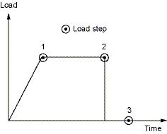
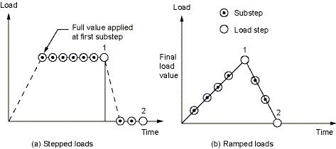
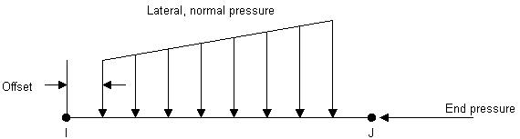
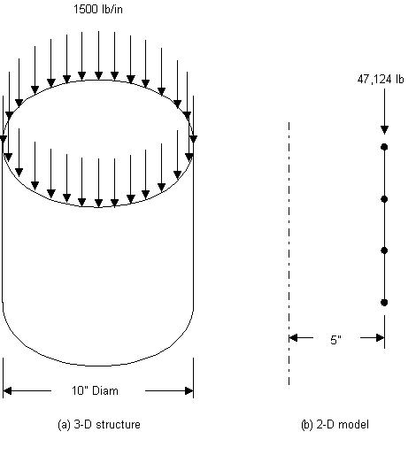

The primary objective of a finite element analysis is to examine how a structure
or component responds to certain loading conditions. Specifying the proper loading conditions
is, therefore, a key step in the analysis. Loads can be applied on the model in a variety of ways.
With the help of load step options, the analyst can control how the loads are actually used during solution.
2.2.1 Understanding Loads
The term loads includes boundary conditions
and externally or internally applied forcing functions, as illustrated in Fig. 2.9. Examples
of loads in different disciplines are:
Structural: displacements, velocities, accelerations, forces, pressures, temperatures
(for thermal strain), gravity
Thermal: temperatures, heat flow rates, convections, internal heat generation, infinite surface
Boundary conditions, as well as other types of loading, are also shown.

Fig. 2.9 Loads
Loads are divided into six categories: DOF constraints, forces (concentrated loads), surface loads, body loads, inertia loads, and coupled-field loads.
- A DOF constraint fixes a degree of freedom (DOF) to a known
value. Examples of constraints are specified displacements and symmetry boundary conditions
in a structural analysis, prescribed temperatures in a thermal analysis, and flux-parallel
boundary conditions.
- A force is a concentrated load applied at a node in the model.
Examples are forces and moments in a structural analysis, heat flow rates in a thermal
analysis, and current segments in a magnetic field analysis.
- A surface load is a distributed load applied over a surface.
Examples are pressures in a structural analysis and convections and heat fluxes in a thermal analysis.
- A body load is a volumetric or field load. Examples are
temperatures and fluences in a structural analysis, heat generation rates in a thermal
analysis, and current densities in a magnetic field analysis.
- Inertia loads are those attributable to the inertia (mass matrix)
of a body, such as gravitational acceleration, angular velocity, and angular acceleration.
They are mainly used in a structural analysis.
- Coupled-field loads are simply a special case of one of the
above loads, where results from one analysis are used as loads in another analysis.
For example, magnetic forces calculated in a magnetic field analysis can be applied
as force loads in a structural analysis.
A load step is simply a configuration of
loads for which a solution is obtained. In a linear static or steady-state analysis,
the analyst can use different load steps to apply different sets of loads - wind
load in the first load step, gravity load in the second load step, both loads and a
different support condition in the third load step, and so on. In a transient analysis,
multiple load steps apply different segments of the load history curve.
The program uses the set of elements which the analyst selects for the
first load step. It doesn’t matter which element sets are specified for the later
steps for all subsequent load steps. Use Utility Menu> Select> Entities
to select an element set.
Figure 2.10 shows a load history curve that requires three load steps -
the first load step for the ramped load, the second load step for the constant portion
of the load, and the third load step for load removal.

Fig. 2.10 Transient Load History Curve
2.2.3 The Role of Time in Tracking
The program uses time as a tracking parameter in all
static and transient analyses, whether they are or are not truly time-dependent. The advantage
of this is that the analyst can use one consistent ‘counter’ or ‘tracker’ in all cases,
eliminating the need for analysis-dependent terminology. Moreover, time always increases
monotonically, and most things in nature happen over a period of time, however brief
the period may be.
Obviously, in a transient analysis or in a rate-dependent static
analysis (creep or viscoplasticity), time represents
actual, chronological time in seconds, minutes, or hours. Assign the time at the end of
each load step while specifying the load history curve. Use one of the following to assign time:
- Main Menu> Preprocessor> Loads> Load Step Opts> Time/Frequenc> Time and Substps
- Main Menu> Preprocessor> Loads> Load Step Opts> Time/Frequenc> Time - Time Step
- Main Menu> Solution> Analysis Type> Sol'n Control
- Main Menu> Solution> Load Step Opts> Time/Frequenc> Time and Substps
- Main Menu> Solution> Load Step Opts> Time/Frequenc> Time - Time Step
- Main Menu> Solution> Load Step Opts> Time/Frequenc> Time and Substps
- Main Menu> Solution> Load Step Opts> Time /Frequenc> Time - Time Step
In a rate-independent analysis, however, time
simply becomes a counter that identifies load steps and substeps. By default, the program
automatically assigns time = 1.0 at the end of load step 1, time = 2.0 at the end of load step 2,
and so on. Any substeps within a load step are assignedthe appropriate, linearly
interpolated time value..
2.2.4 Stepped Versus Ramped Loads
When more than one substep is specified in a load step, the question of whether the loads should be stepped or ramped arises (Fig. 2.11).
- If a load is stepped, then its full value is applied at the first substep and stays constant for the rest of the load step.
- If a load is ramped, then its value increases gradually at each substep, with the full value occurring at the end of the load step.
Fig. 2.11 Stepped Versus Ramped Loads
Use either of the following to indicate whether loads are ramped or stepped:
- Main Menu> Solution> Load Step Opts> Time/Frequenc> Freq & Substeps: Transient Tab
- Main Menu> Solution> Load Step Opts> Time/Frequenc> Time and Substps
- Main Menu> Solution> Load Step Opts > Time/Frequenc> Time & Time Step
- Main Menu> Solution> Load Step Opts> Time/Frequenc> Freq & Substeps
- Main Menu> Solution> Load Step Opts> Time/Frequenc> Time and Substps / Main Menu> Solution> Load Step Opts> Time/Frequenc> Time & Time Step
2.2.5 Applying Loads
Most loads can be applied either on the solid model or on the finite element model. For example, the analyst can specify forces at a keypoint or a node. Similarly, s/he can specify convections on lines and areas or on nodes and element faces. No matter how the loads are specified, the solver expects all loads to be in terms of the finite element model. Therefore, if loads are specified on the solid model, the program automatically transfers them to the nodes and elements at the beginning of solution.
2.2.5.1 Solid-Model Loads: Advantages and Disadvantages
Advantages
Solid-model loads are independent of the finite element mesh. That is, the element mesh can be changed without affecting the applied loads. This allows to make mesh modifications and conduct mesh sensitivity studies without having to reapply loads each time. The solid model usually involves fewer entities than the finite element model. Therefore, selecting solid model entities and applying loads on them is much easier, especially with graphical picking.
Disadvantages
Elements generated by meshing commands are in the currently active element coordinate system. Nodes generated by meshing commands use the global Cartesian coordinate system. Therefore, the solid model and the finite element model may have different coordinate systems and loading directions. Applying keypoint constraints can be tricky, especially when the constraint expansion option is used. All solid-model loads can not be displayed.
2.2.5.2 Finite-Element Loads: Advantages and Disadvantages
Advantages
There is no need to worry about constraint expansion. All desired nodes can be selected and the appropriate constraints can be specified.
Disadvantages
Any modification of the finite element mesh invalidates the loads, requiring the analyst to delete the previous loads and re-apply them on the new mesh. Applying loads by graphical picking is inconvenient, unless only a few nodes or elements are involved.
2.2.5.3 DOF Constraints
Following are some of the GUI paths that can be used to apply DOF constraints:
- Main Menu> Preprocessor> Loads> Define Loads> Apply> load type> On Nodes
- Utility Menu> List> Loads> DOF Constraints> On All Keypoints (or On Picked KPs)
- Main Menu> Solution> Define Loads> Apply> load type> On Lines
2.2.5.4 Transferring Constraints
Use Main Menu> Preprocessor> Loads> Define Loads> Operate> Transfer to FE> Constraints or Main Menu> Solution> Define Loads> Operate> Transfer to FE> Constraints to transfer constraints that have been applied to the solid model to the corresponding finite element model.
Use Main Menu> Preprocessor> Loads> Define Loads> Operate> Transfer to FE> All Solid Lds or Main Menu> Solution> Define Loads> Operate> Transfer to FE> All Solid Lds to transfer all solid model boundary conditions.
2.2.5.6 Forces (Concentrated Loads)
Following are examples of some of the GUI paths used for applying force loads:
- Main Menu> Preprocessor> Loads> Define Loads> Apply> load type> On Nodes
- Utility Menu> List> Loads> Forces> On All Keypoints (or On Picked KPs)
- Main Menu> Solution> Define Loads> Apply> load type> On Line
2.2.5.7 Surface Loads
Following are examples of some of the GUI paths used for applying surface loads:
- Main Menu> Preprocessor> Loads> Define Loads> Apply> load type> On Nodes
- Utility Menu> List> Loads> Surface> On All Elements (or On Picked Elements)
- Main Menu> Solution> Define Loads> Apply> load type> On Lines
The program stores surface loads specified on nodes internally in terms of elements and element faces. Therefore, if both nodal and element surface load commands are used for the same surface, only the last specification is used.
The program applies pressures on axisymmetric shell elements or beam elements on their inner or outer surfaces, as appropriate. In-plane pressure load vectors for layered shells (such as SHELL281) are applied on the nodal plane. KEYOPT(11) determines the location of the nodal plane within the shell. When using flat elements to represent doubly curved surfaces, values which should be a function of the active radius of the meridian be inaccurate.
Applying Pressure Loads on Beams
Use Main Menu> Preprocessor> Loads> Define Loads> Apply> Structural> Pressure> On Beams or Main Menu> Solution> Define Loads> Apply> Structural> Pressure> On Beams to apply pressure loads on the lateral faces and the two ends of beam elements.
Lateral pressures, which have units of force per unit length, can be applied both in the normal and tangential directions. The pressures may vary linearly along the element length, and can be specified on a portion of the element, as shown in Fig. 2.12. The analyst can also reduce the pressure down to a force at any location on a beam element by setting the JOFFST field to -1. End pressures have units of force.

Fig. 2.12 Example of Beam Surface Loads
2.2.5.8 Applying Body Loads
Following are examples of some of the GUI paths used for applying body loads:
- Main Menu> Preprocessor> Loads> Define Loads> Apply> load type> On Nodes
- Utility Menu> List> Loads> Body> On Picked Elems
- Main Menu> Solution> Define Loads> Apply> load type> On Keypoints
- Utility Menu> List> Loads> Body> On Picked Lines
- Main Menu> Solution> Define Loads> Apply> load type> On Volumes
2.2.5.9 Applying Coupled-Field Loads
A coupled-field analysis usually involves applying results data from one analysis as loads in a second analysis. For example, the nodal temperatures calculated in a thermal analysis can be applied as body loads in a structural analysis. Similarly, magnetic forces calculated in a magnetic field analysis can be applied as nodal forces in a structural analysis. Use Main Menu> Preprocessor> Loads> Define Loads> Apply> load type> From source or Main Menu> Solution> Define Loads> Apply> load type> From source to apply such coupled-field loads.
2.2.5.10 Axisymmetric Loads and Reactions
For constraints, surface loads, body loads, and Y-direction accelerations, loads are defined exactly as they would be for any nonaxisymmetric model. However, for concentrated forces the procedure is a little different. For these quantities, input load values of force, moment, etc. are on a ‘360° basis.’ That is, the load value is entered in terms of total load around the circumference. For example, if an axisymmetric axial load of 1500 pounds per inch of circumference were applied to a 10’ diameter pipe (Fig. 2.13), the total load of 47,124 lb. (1500*2 π*5 = 47,124) would be applied to node N.
Axisymmetric results are interpreted in the same fashion as their corresponding input loads. That is, reaction forces, moments, etc. are reported on a total load (360°) basis.
Axisymmetric harmonic elements require that their loads be supplied in a form that the program can interpret as a Fourier series. The GUI path Main Menu> Preprocessor> Loads> Load Step Opts> Other> For Harmonic Ele or Main Menu> Solution> Load Step Opts> Other> For Harmonic Ele, together with other load commands (D, F, SF, etc.), is required for these elements.

Fig. 2.13 Concentrated Axisymmetric Loads
2.2.6 Specifying Load Step Options
As mentioned earlier, load step options is a collective name for options that control how loads are used during solution and other options such as output controls, damping specifications, and response spectrum data. Load step options can vary from load step to load step. There are six categories of load step options:
- General Options
- Dynamics Options
- Nonlinear Options
- Output Controls
- Biot-Savart Options
- Spectrum Options
These include such options as time at the end of a load step in transient and static analyses, number of substeps or the time step size, stepping or ramping of loads, and reference temperature for thermal strain calculations.
2.2.7 Creating Multiple Load Step Files
All loads and load step options put together form a load step, for which the program can calculate the solution. If there are multiple load steps, store the data for each load step on a file, called the load step file, and read it in later for solution. Use Main Menu> Preprocessor> Loads> Load Step Opts> Write LS File or Main Menu> Solution> Load Step Opts> Write LS File.
If the Solution Controls dialog box is used to set the analysis and load step options, define each load step using the Basic tab. After all load step files are written, use one action command to read in the files sequentially and obtain the solution for each load step.